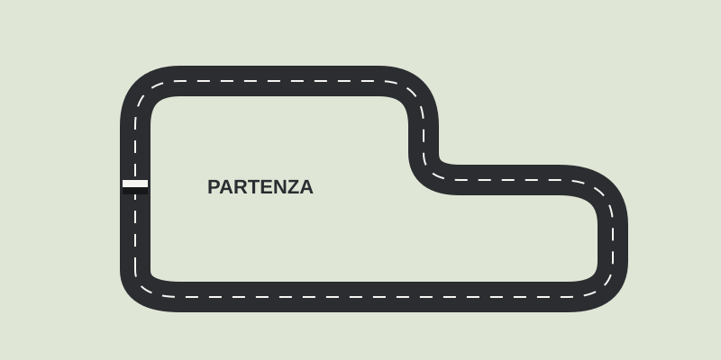

Categorie
Il motorsport comprende discipline molto diverse tra loro: cambiano il mezzo, il terreno e anche il modo di vincere. Questa tabella riassume le quattro più seguite.
| Categoria | Mezzo | Dove si corre | Gara simbolo |
|---|---|---|---|
| Formula 1 | Monoposto | Circuiti e strade chiuse | Gran Premio di Monaco |
| MotoGP | Moto da corsa | Circuiti | Gran Premio d'Italia al Mugello |
| Rally | Auto derivate dalla serie | Strade sterrate e asfaltate | Rally di Montecarlo |
| Endurance | Prototipi e GT | Circuiti | 24 Ore di Le Mans |
Endurance: vince chi non si ferma
Nelle gare di durata contano l'affidabilità e la gestione del team: il pilota che guida non è quasi mai lo stesso per tutta la gara, e il cambio di equipaggio fa parte della strategia.


Per iniziare a seguire una gara
- Guarda le qualifiche: decidono la posizione di partenza.
- Segui la strategia delle soste, non solo chi è in testa.
- Impara il significato delle bandiere, a partire da quella a scacchi.